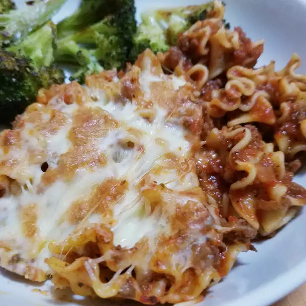

Lasagna

Description
A rich and creamy whole-wheat pasta dish filled layer by layer with
refreshingly fresh onions and garlic, lathered in a succulent sauce and topped with imported, premium quality mozzarella.
Very tasty! Yum! Yum!
Ingredients
Steps
- Start by setting a large pot of water to boil
- Once the water starts to boil, add the noodles to the pot and stir them continuously for 2 minutes so they don't stick to the sides
- Then, leave the noodles to cook for 8 to 10 minutes, stirring them occasionally